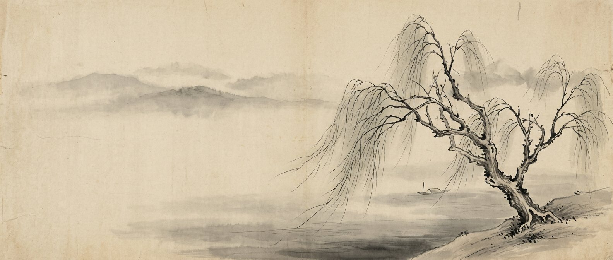
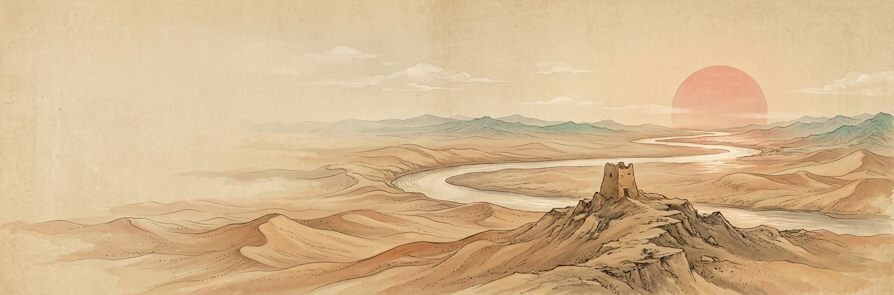
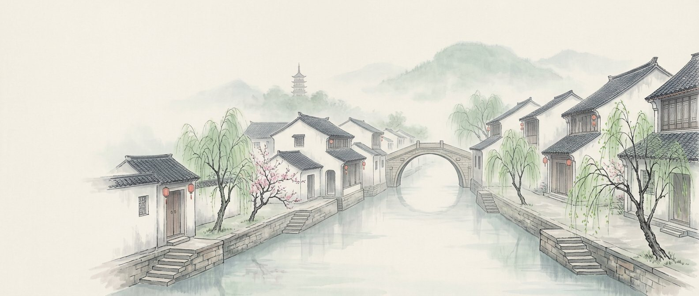

柳01
杨柳依依 · 折柳含蓄
Willows · Farewell Unspoken昔我往矣，杨柳依依
从《采薇》到灞桥折柳：风中的柳条像挥别的手臂，不舍放手，慢慢摆手。
展卷
关02
边塞诗歌集
Frontier Poems秦时明月汉时关
大漠、孤城、关山月：四卷十八首，看豪情与乡愁如何同在一幅画里。
展卷
梦03
江南水乡诗歌集
Jiangnan Water-Town Poems日出江花红胜火
烟雨水巷、乌篷船与拱桥：四卷十六首，读江南的明媚与烟愁。
展卷